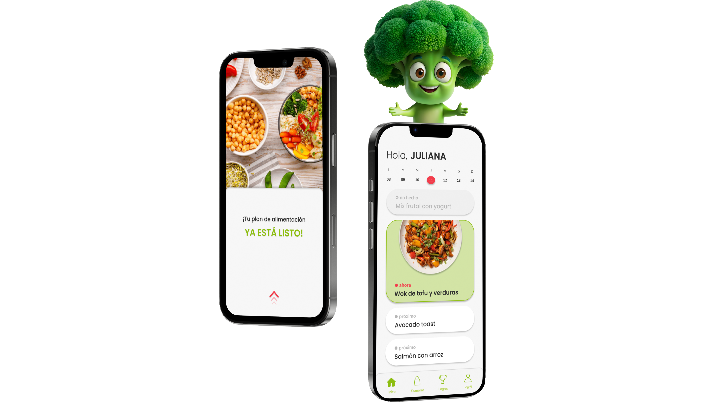
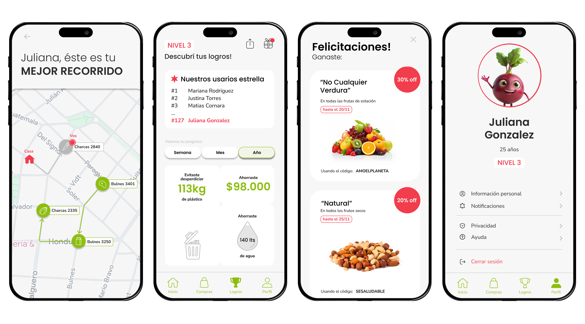

Verdi es una aplicación de planificación de comidas enfocada en la alimentación sustentable y natural. Acompaña a los usuarios en sus decisiones de compra cotidianas, ayudándolos a incorporar hábitos de consumo más conscientes sin resignar tiempo ni presupuesto.

